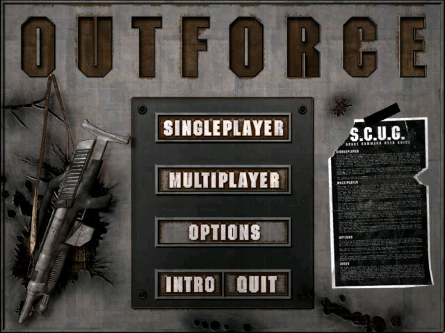
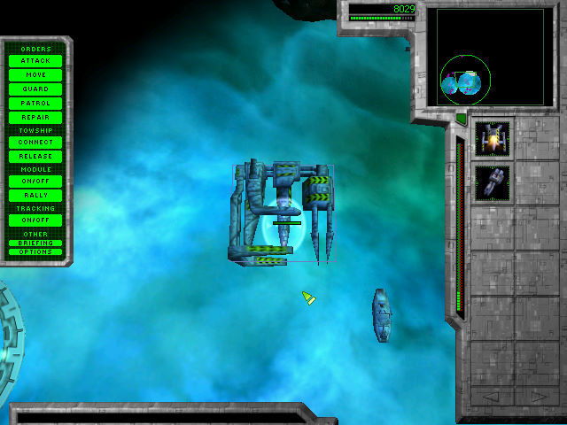

名稱：天燎怒火 (The Outforce，英文版)
簡介：O3 2000年出品的即時戰略遊戲，由Infinite Loopo代理發行，台灣由會宇代理進口，
但並未中文化 [待補]。


保護：光碟
備註：非安裝移機者，必須設定下列Registry（假設安裝目錄在C:\Outforce，光碟在D）：
[HKEY_LOCAL_MACHINE\SOFTWARE\O3\Outforce\Settings]
[HKEY_LOCAL_MACHINE\SOFTWARE\WOW6432Node\O3\Outforce\Settings]
"SetupPath"="D:"
"InstalledPath"="C:\\Outforce"
備註：1.01版僅歐版需要，美版不用（也無法更新）。會宇版是美版，不用更新至1.01。
備註：以下是本遊戲在各系統環境的執行狀況：
1.VirtualBox+XP：需搭配WineD3D，但仍有些許貼圖錯誤。
2.VMware+XP：需搭配DxWnd（可全螢幕），但遊戲會卡頓不順。
3.Win64：需設定System\Outforce.exe與Outforce_w2k.exe為XP相容，且需要d3drm.dll，
執行正常，但離開遊戲時可能會當死。
4.VMware+Win98：一切正常。
5.PCem+Win98：無法執行。